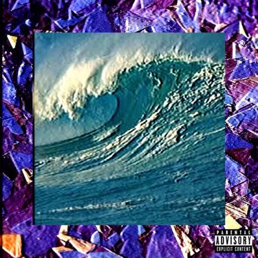
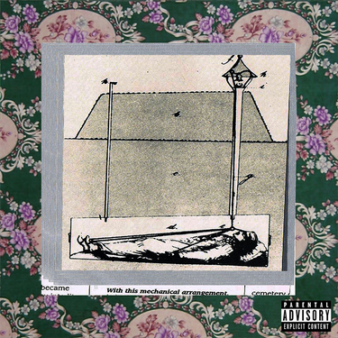

| Название | Дата релиза | Список терков | Обложка |
|---|---|---|---|
| KILL YOUR$ELF Part I: The $uicide $aga | 16 июля 2014 |
Kill Your$elf Ma$k & da Glock Maple $yrup Kill Your$elf (Leaned Out Remix) Maple $yrup (DJ Poliwhirl Remix) |
|
| KILL YOUR$ELF Part II: The Black $uede $aga | 6 августа 2014 |
Rotten $oul$ Friday the 13th Ocean $ide $uicide |
|
| KILL YOUR$ELF Part III: The Budd Dwyer $aga | 27 августа 2014 |
100 Blunt$ $moked Out, Loced Out Heavily Medicated Lettuce $low Motion Potion 100 Blunt$ (DJ Phantazm Remix) |
|
| KILL YOUR$ELF Part IV: The Trill Clinton $aga | 24 сентября 2014 |
nm jc Lo-Fi (Kill ’Em All) Prince Tulip Thieves Pe$o $leepy Hollow (Slopped & Chewed) |
|
| KILL YOUR$ELF Part V: The Fuck Bitche$, Get Death $aga | 30 октября 2014 |
Fuck a Hoe Deep Web Aphrodite (The Aquatic Ape Theory) |
|
| KILL YOUR$ELF $agas: I - V | 30 октября 2014 |
Kill Your$elf Ma$k & da Glock (Ft. TrippyThaKid) Maple $yrup (Ft. BONES) Rotten $oul$ Friday the 13th Ocean $ide $uicide 100 Blunt$ $moked Out, Loced Out Heavily Medicated nm jc Lo-Fi (Kill 'Em All) Prince Tulip Fuck a Hoe (Ft. Black Smurf) Deep Web (Ft. Woozy Medwick) Aphrodite (The Aquatic Ape Theory) |
|
| KILL YOUR$ELF Part VI: The T$unami $aga | 27 ноября 2014 |
Tony Hawk Pro Skater 4 Purple Ranger [$ippin’ Donatello with Captain Ginyu Y2K Remix] (Ft. Wavy Jone$) Gold (’99-2000) Trapathy $aturn $unrise $uicider |
 |
| KILL YOUR$ELF Part VII: The Fuck God $aga | 27 декабря 2014 |
Where's Your God? VIVIVI (Ft. Ramirez) NOxygen Grey Boy$ Crucify Me Wearing Tommy Back from the Dead 333333 [RARE* '96 BOOTLEG CA$$ETTE RIP TRE$ $EI$] |
 |
| KILL YOUR$ELF Part VIII: The $eppuku $aga | 8 января 2015 |
Tempura Bag$ Kamehameha (Kamikaze Remix) Vietnam |
|
| KILL YOUR$ELF Part IX: The $oul$eek $aga | 14 января 2015 |
Harve$t Moon Don't Give a Fuck ($oul Doubt Remix) Hair |
|
| KILL YOUR$ELF Part X: The Re$urrection $aga | 24 января 2015 |
Durango '95 (A Real Horror Show) Lemon $lime $moked Out, Loced Out (Part II) (Ft. Eddy Baker) Flodgin’ Limp Wri$t $leep Walk Torcher |
|
| Gray/Grey | 3 марта 2015 |
#1 Stunna Pontiac $unfire Loot (Ft. Black Smurf & Ramirez) Magnolia (Ft. KirbLaGoop) Gabapentin Getaway $hrimp Poboy (Ft. Supa SortaHuman) Prettyleaf To Kill a Mockingbird (Ft. Nasty Matt) Clouds as Witnesses Gaudy Pack $hawty (Ft. Yung God) Behold a Pale Horse Kill Your$elf (Part II) Gray/Grey (Bonus Album Only Track) |
|
| 7th or St. Tammany | 7 апреля 2015 |
7th or St. Tammany Dead Batteries I’ll Pay for It (If I Want It) That's Very Minimalist of You Romulus Vices (Ft. JGRXXN) Straw Chairs 40 Oz. & Sober Drugs/Hoes/Money/Etc. St. Bernard Leave Your Things Behind Rag Round My Skull |
|
| YUNGDEATHLILLIFE | 8 мая 2015 |
I Miss My Dead Friends That Time We Went to Wal Mart In Memphis To Steal Some Shit Before We Met Up With TA To Shoot His Video (Ft. Ghost (Memphis)) LTE Gloss of Blood La Croix All My Life I've Wanted a Chevy I Ended Up Driving the Camaro Off the Causeway Bridge April Mourning Cerberus (Ft. Masta Drag) In Order to Cast a Shadow You Must First Light a Fire Handzum $uicide (Ft. Rozz Dyliams) Sold My Soul to Satan Waiting in Line at the Mall Fuck Boy Blood Bath |
|
| High Tide in the Snake’s Nest | 15 июня 2015 |
DIEMONDS Ugly $outh $ide $uicide (Ft. Pouya) Mount Sinai Lincoln Continental Memorial (Ft. Slug † Christ) Mannequins Are My Best of Friends Sunshine Rotten and Paralyzed in a Tropical Paradise Fake Pontchartrain (Ft. Key Nyata) Exodus |
|
| Grey Sheep | 22 июля 2015 |
Black Beard Broke(n) The Crescent Moon and the Rising Sun Everest Let 'Em Burn Second Coming Oracle |
|
| I No Longer Fear the Razor Guarding My Heel | 1 августа 2015 |
My Flaws Burn Through My Skin Like Demonic Flames from Hell My Scars Are Like Evidence Being Mailed to the Judge I Will Celebrate for Stepping on Broken Glass and Slipping on Stomach Soaked Floors I No Longer Fear the Razor Guarding My Heel |
|
| My Liver Will Handle What My Heart Can’t | 21 сентября 2015 |
Vincent Van Gogh Ain't Got Shit on Me Reign in Blood Shattered Amethyst Fold Tulane Cherish the Dead Opal Ring T.R.U. (Totally Rotten Underground) Whoa, I'm Woeful A Death in the Ocean Would Be So Beautiful FUCKTHEPOPULATION Kill Yourself (Part III) Iron Veil |
|
| I No Longer Fear the Razor Guarding My Heel (II) | 3 ноября 2015 |
CLYDE (I Hope At Least One Of My Ex-Girlfriends Hears This) I No Longer Fear the Razor Guarding My Heel (II) |
|
| Now the Moon’s Rising | 20 ноября 2015 |
Paris Converting... Low Key Gutting Catfish I Think I'm Ian Read Evolution (Pretty Good Movie/Pretty Good Theory) Underwater Malibu Dejection To Have and Have Not Can of Worms |
|
| Dark Side of the Clouds | 3 февраля 2016 |
Paper Bag Mask Cherry P.I.E. praisethedevil Jeffer Drive AM/PM Jon Voight (Live Fast, Die Young) Marlboros & White Widow (Ft. Germ) Golden Calf (Ft. Eddy Baker & Fat Nick) Aite, Bet. Grayscale (Ft. Black Smurf, JGRXXN & Ramirez) Antarctica Novus Ordo Seclorum |
|
| Grey Sheep II | 25 мая 2016 |
Do You Believe in God? A Girl Named Drool and a Pack of Kools The Sacred Chevrolet (Pimpalicious Candy Cane Mane ’74 Remix) Aokigahara Resin The Nail to the Cross |
|
| Radical $uicide | 22 июля 2016 |
Stop Calling Us Horrorcore Champion of Death Goosebumps Magazine Memoirs of a Gorilla |
|
| Eternal Grey | 11 сентября 2016 |
BREAKDALAW2K16 (Ft. Pouya) Say Cheese and Die Eclipse Chariot of Fire I Want to Believe Uglier (Ft. Da$H) Water $uicide (Ft. Chris Travis) Elysian Fields 275 $uicide (Ft. Yung Simmie) Lucky Me It's Hard to Win When You Always Lose O Pana! Ultimate $uicide (Ft. Denzel Curry) Leave Your Things Behind II Lyrics |
|
| I No Longer Fear the Razor Guarding My Heel (III) | 17 декабря 2016 |
All That Glitters Is Not Gold, But It's Still Damn Beautiful I No Longer Fear The Razor Guarding My Heel III Official Lyric Book I No Longer Fear the Razor Guarding My Heel (III) |
|
| KILL YOUR$ELF Part XIII: The Atlanti$ $aga | 26 мая 2016 |
O’ Lord! I Have My Doubts Hard to Tell New Chains, Same Shackles |
|
| KILL YOUR$ELF Part XV: The Coast of Ashe$ $aga | 26 мая 2017 |
Styrofoam Withdrawals/Withdrawals Pictures (Ft. Maxo Kream) |
|
| KILL YOUR$ELF Part XII: The Dark Glacier $aga | 26 мая 2017 |
Audubon 2nd Hand Planting the Roots Only to Fall Out the Tree |
|
| KILL YOUR$ELF Part XI: The Kingdom Come $aga | 26 мая 2016 |
Temple Spray Nightmare Choir (I Been Asleep Too Long) You’re Now Tuning in to 66.6 FM with DJ Rapture (The Hottest Hour of the Evening) |
 |
| KILL YOUR$ELF Part XVI: The Faded $tains $aga | 8 сентября 2017 |
I'm Done. Smoked Out, Scoped Out Gloom |
|
| KILL YOUR$ELF Part XVIII: The Fall of Idols $aga | 9 сентября 2017 |
I Am the Apocalypse Goodbye From the Beginning of Time Until the End of Time |
|
| KILL YOUR$ELF Part XIX: The Deep End $aga | 10 сентября 2017 |
Leave Me Alone Failure by Design Introversion 2.0 |
|
| KILL YOUR$ELF Part XVII: The $uburban $acrifice $aga | 11 сентября 2017 |
Lamar Avenue Second Lines Come with Broken Souls Face It |
|
| KILL YOUR$ELF Part XX: The Infinity $aga | 11 сентября 2017 |
For the Last Time I Hung Myself for a Persona Now I'm Up to My Neck With Offers |
|
| I Want to Die in New Orleans | 7 сентября 2018 |
King Tulip Bring Out Your Dead Nicotine Patches 10,000 Degrees 122 Days Phantom Menace Krewe du Vieux (Comedy & Tragedy) WAR TIME ALL THE TIME Coma Long Gone (Save Me from This Hell) Meet Mr. NICEGUY Carrollton FUCK the Industry I No Longer Fear the Razor Guarding My Heel (IV) |
|
| Stop Staring at the Shadows | 14 февраля 2020 |
All Dogs Go to Heaven I Wanna Be Romanticized One Last Look at the Damage [whispers indistinctly] MEGA ZEPH Putrid Pride That Just Isn't Empirically Possible What The Fuck Is Happening Bizarro Scope Set Fuck Your Culture ...And to Those I Love, Thanks for Sticking Around |
|
| Long Term Effects of SUFFERING | 13 августа 2021 |
Degeneration in the Key of A Minor If Self-Destruction was an Olympic Event, I'd be Tonya Harding Life is but a Stream~ 5 Grand at 8 to 1 WE ENVY NOTHING IN THE WORLD. Lighting the Flames of My Own Personal Hell NEW PROFILE PIC Bleach Forget It Avalon Materialism as a Means to an End Ugliest The Number You Have Dialed is Not in Service |
|
| I No Longer Fear the Razor Guarding My Heel (V) | 11 августа 2023 |
Not Even Ghosts Are This Empty Finding Shelter In My Larynx A Little Trauma Can Be Illuminating, And I’m Shining Like The Sun I No Longer Fear the Razor Guarding My Heel (V) |